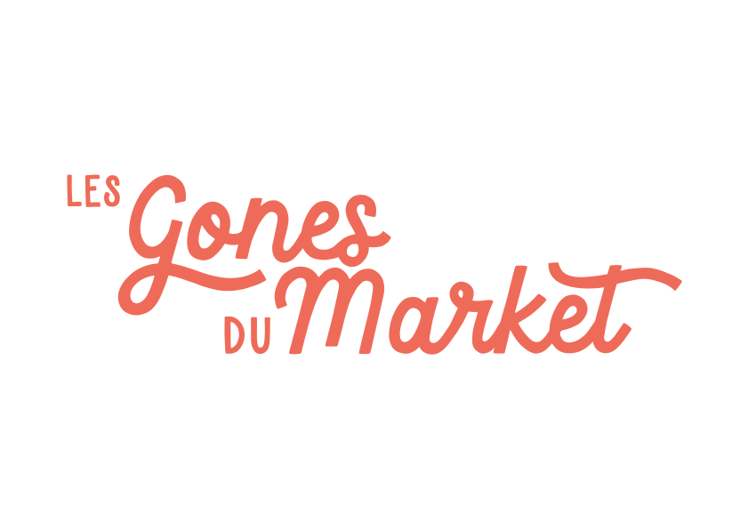

Espace membres
Bons plans &
recommandations
Les recommandations issues du fil Entraide WhatsApp. Partagées par les membres, pour les membres.

Réservé aux membres des Gones du Market'
Les recommandations issues du fil Entraide WhatsApp. Partagées par les membres, pour les membres.